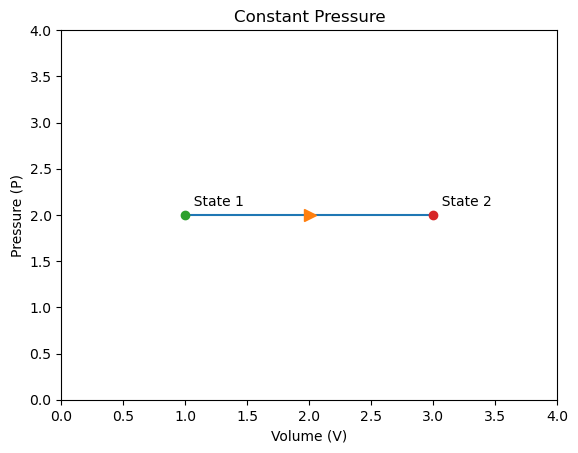
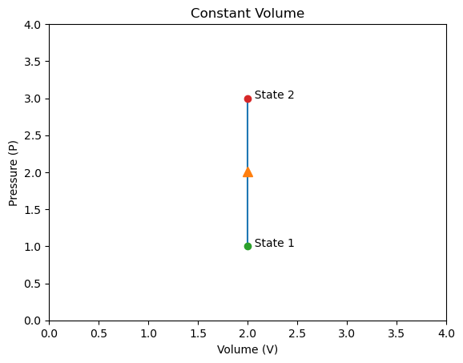
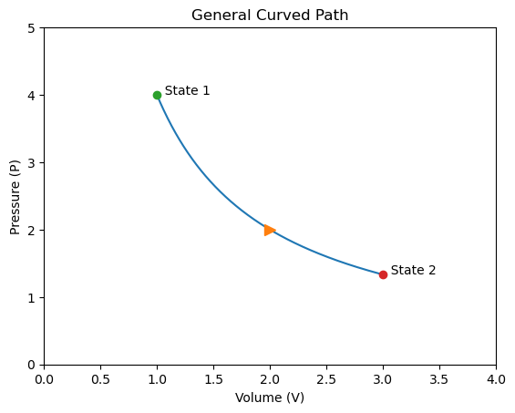

C10.2 PV Diagrams — Geometric Thermodynamics#
Why this section matters#
In C10.1, we introduced:
Thermodynamic systems
State variables
Equations of state
Now we take the next conceptual step:
We represent thermodynamic states geometrically.
A thermodynamic state is defined by values of \(P\), \(V\), and \(T\).
Since \(P\) and \(V\) are directly measurable and easily plotted, we can represent states on a Pressure–Volume (PV) diagram.
PV diagrams allow us to:
Visualize changes between states
Compare different paths between the same states
Interpret work geometrically
This is where thermodynamics becomes visual and structural.
1. What Is a PV Diagram?#
A PV diagram is a graph where:
Horizontal axis: Volume \(V\)
Vertical axis: Pressure \(P\)
Each point on the diagram represents a unique equilibrium state of the system.
If the system changes from one state to another, that change is represented by a curve (or line) connecting two points.
Important Idea
A single point = one thermodynamic state.
A curve = a process between states.
2. Moving Between States#
Consider a gas that changes from:
State 1: \((P_1, V_1)\)
State 2: \((P_2, V_2)\)
There are infinitely many possible ways to move between these states.
Each different path represents:
Different pressure values during the change
Different work done
Different heat transfer
But the same:
because internal energy depends only on the initial and final states.
This is the geometric manifestation of:
State functions vs path-dependent quantities.
3. Work as Geometric Area#
When a gas expands or compresses, it can do mechanical work.
For a small change in volume \(\Delta V\) at pressure \(P\):
Work is approximately:
On a PV diagram:
\(P\) corresponds to height
\(\Delta V\) corresponds to width
So the work corresponds to a rectangular area.
For a process involving many small changes:
The total work equals the area under the curve.
Graphically:
Expansion (\(V\) increases) → \(W > 0\)
Compression (\(V\) decreases) → \(W < 0\)
This geometric interpretation is central to Phase C thermodynamics.
Box Activity 1
In this activity, you will derive the expression for mechanical work done by a gas during a small volume change.
We begin with the definition of mechanical work:
where:
\(F\) is the force applied
\(d\) is the displacement in the direction of the force
Scenario: Gas in a Cylinder
Consider a gas confined in a cylinder with:
Cross-sectional area \(A\)
A movable piston on top
Internal pressure \(P\)
The gas expands slightly, pushing the piston outward by a small distance \(\Delta x\).
Tasks
Express the force exerted by the gas on the piston in terms of pressure \(P\) and area \(A\).
Write the expression for the mechanical work done by the gas during a small piston displacement \(\Delta x\).
Express the small change in volume \(\Delta V\) in terms of \(A\) and \(\Delta x\).
Combine your results to obtain an expression for work in terms of pressure and change in volume.
Use proper reasoning at each step.
A Possible Solution Guide
1) Force from pressure
Pressure is defined as force per area:
Therefore:
2) Mechanical work definition
Work done during a small displacement is:
Substitute \(F = PA\):
3) Volume change
When the piston moves a small distance \(\Delta x\), the volume changes by:
because volume = area × length.
4) Final expression
Substitute \(\Delta V = A\Delta x\) into the work expression:
Interpretation
If \(\Delta V > 0\) (expansion), the gas does positive work.
If \(\Delta V < 0\) (compression), work is negative.
This simple geometric result forms the foundation for interpreting work as area on a PV diagram.
Later, when volume changes continuously, this idea leads to summing many small contributions — which becomes the integral form in Phase B.
4. Simple Types of Paths on a PV Diagram#
Without yet using calculus, we can identify common path shapes.
Constant Pressure (Horizontal Line)
Pressure remains fixed.
Volume changes.
Work is a rectangle:
Constant Volume (Vertical Line)
Volume remains fixed.
No area under curve.
No work is done:
General Curved Path
Pressure changes continuously with volume.
Work corresponds to the curved area.
Different curves between the same endpoints produce different work.



5. Cycles on a PV Diagram#
If a process returns to its starting state, the path forms a closed loop.
For a cyclic process:
because the initial and final states are identical.
However:
Heat exchanged may not be zero.
Work done may not be zero.
The net work is equal to the area enclosed by the loop.
This is the geometric foundation of heat engines.
Conceptual Checkpoints#
You should now be able to answer:
What does a point on a PV diagram represent?
Why can two different curves connect the same two states?
Why does area under the curve represent work?
Why can a cyclic process produce net work even though \(\Delta U = 0\)?
Preparation for Next Section#
PV diagrams allow us to:
Analyze specific thermodynamic processes
Compare energy transfer in different paths
Introduce heat capacities and efficiency
Next, we will examine specific thermodynamic processes in detail.